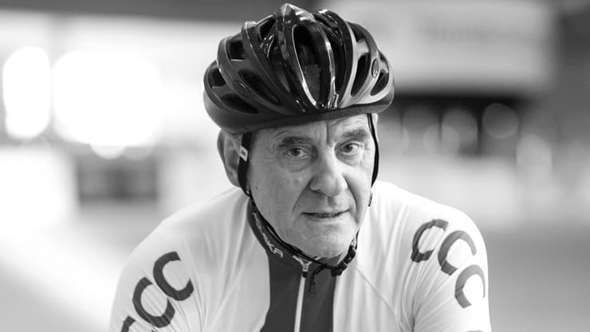

Ryszard Jan Szurkowski (ur. 12 stycznia 1946 w Świebodowie, zm. 1 lutego 2021 w Radomiu) – polski kolarz szosowy, dwukrotny wicemistrz olimpijski, czterokrotny medalista mistrzostw świata oraz dwunastokrotny mistrz Polski, najbardziej znany ze zdominowania przez kilka lat z rzędu Wyścigu Pokoju, poseł na Sejm PRL IX kadencji, trener, działacz sportowy, handlowiec, były prezes Polskiego Związku Kolarskiego.
Życiorys
Pochodził z Dolnego Śląska, gdzie się urodził 12 stycznia 1946. Z wykształcenia był nauczycielem wychowania fizycznego oraz trenerem kolarstwa. W zawodach kolarskich startował od 1963, początkowo jako niezrzeszony amator. Swoją karierę rozpoczął w Radomiu, pod okiem trenera kolarzy Radomiaka Radom, Ryszarda Swata, na trasach w okolicach Garbatki-Letnisko, gdzie odbywał zasadniczą służbę wojskową. Po odbyciu służby wojskowej, postanowił kontynuować swoją karierę, kierując się do klubu KS „Dolmel” Wrocław.
W 1980 skończył karierę reprezentacyjną, a dwa lata później będąc zawodnikiem KS „Polonez” Warszawa zakończył karierę klubową. Po raz ostatni jako zawodnik wystąpił w październiku 1984, w wyścigu Marynarki Wojennej, po którym zakończył ostatecznie swoją karierę. Był zawodnikiem następujących klubów: LZS Milicz (1966), Radomiak Radom (1966–1967, na czas odbywania służby wojskowej), KS „Dolmel” Wrocław (1968–1978), FSO Warszawa (1979) i KS „Polonez” Warszawa (1979–1982).
W latach 1984–1988 był trenerem kadry narodowej kolarzy szosowych. W 1997 był szefem wyszkolenia Polskiego Związku Kolarskiego. W latach 1988–1989 prowadził pierwszą w Polsce zawodową grupę kolarską Exbud Kielce, potem założył Klub Sportowy „Szurkowski” w Warszawie (1991), był także dyrektorem polskiej części Wyścigu Pokoju. W latach 2007–2008 był prezesem zawodowej grupy kolarstwa górskiego MTB Halls Team. W okresie od 31 marca 2010 do 5 marca 2011 był prezesem Polskiego Związku Kolarskiego.
W latach 1985–1989 był posłem na Sejm Polskiej Rzeczypospolitej Ludowej z listy krajowej (jako bezpartyjny). W 2005 kandydował do Sejmu RP, otwierając wrocławską listę Socjaldemokracji Polskiej, która nie osiągnęła progu wyborczego (także będąc bezpartyjnym).
Od 2011 był jednym z felietonistów magazynu „Rowertour”, poświęconego turystyce rowerowej.
Po zakończeniu czynnej kariery kolarskiej uczestniczył w wielu wyścigach organizowanych m.in. dla tzw. weteranów. 10 czerwca 2018 w Kolonii . Zmarł 1 lutego 2021 po kilku dniach pobytu w radomskim szpitalu na skutek choroby nowotworowej, przechodząc wcześniej zapalenie płuc.